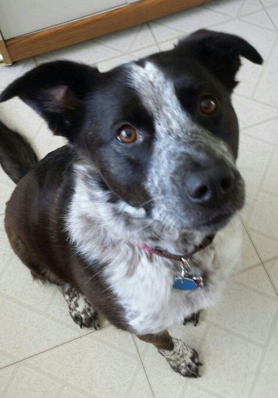

All About Augie
What Breed is Aguie?
When we first brought Augie home, we were told he was a Pointer/Blue Heeler mix. However, we've done some of our own research and believe him to be a Border Collie/Blue Heeler mix. Admittedly, this conclusion is rooted almost completely in how his physical appearance matches other examples of Border Collie/Blue Heeler mixes we've seen online.
Augie Next to a Border Collie/Blue Heeler mix
